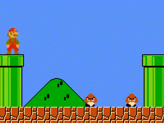
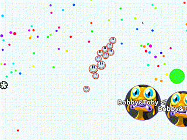
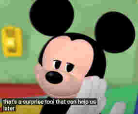
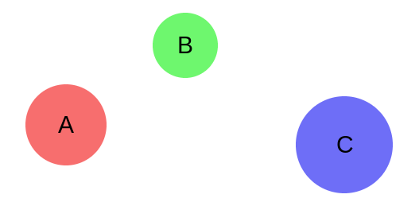
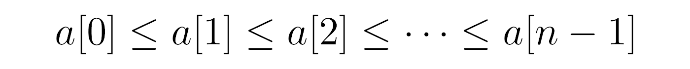

Sweep-and-prune is my go-to algorithm when I want to quickly implement collision detection for a game. I think it’s an awesome and elegant algorithm, so I wrote a post about it.
This post is lengthy with many examples and explanations, thus split into two parts. You can jump to specific bits using this special springboard:
As for the rest of the post, I try to paint a picture of what I think are first principles and show it with interactive demos! Let’s go!
Collision detection
As you may know, the problem of collision detection is pretty common in video game programming. It’s a prerequisite to the implementation of certain game mechanics or simulations.

Goombas colliding
Some of these mechanics include: preventing characters from passing through each other, goombas turning around when bumping into another, big cells eating smaller cells in agar.io, or just about any game physics. All of these need some kind of collision detection.

Cells consuming smaller cells on contact
Here I’ll cover several related approaches, starting with the simplest and building up to the sweep-and-prune algorithm. I won’t cover other approaches, such as space partitioning or spatial tree subdivision.
Balls.
I’ll use this rigid-body ball simulation as a recurring example to demonstrate the algorithms throughout the post:
Alright, let’s dive in! How do we detect these collisions?
Naive approach 🐥
The straightforward solution is to test every potential pair of objects for collision. That is, check every ball against every other ball.
// for each ball
for (let i = 0; i < balls.length; i++) {
const ball1 = balls[i];
// check each of the other balls
for (let j = i + 1; j < balls.length; j++) {
const ball2 = balls[j];
// check for collision
if (intersects(ball1, ball2)) {
bounce(ball1, ball2);
}
}
}
Note in the above code that the inner loop starts at i + 1 to prevent duplicate pairs from being counted (A-B vs B-A). Other than that, it’s a pretty simple solution.
These checks are done on every time step, ensuring that balls will bounce exactly when they collide.
Here’s a slowed-down, highlighted simulation, showing pairs being tested for intersection per time step:
Pairs are highlighted when being tested via intersects().
And it works. But if we had more than just a handful of balls we would start seeing performance issues.
This naive algorithm runs in O(n2) time in Big O terms. That is, for an input of n balls, the algorithm’s running time grows proportionally to the square of the input n. That’s a lot! 📈
This is because for n balls, there are around (n * (n-1))/2 pairs to test, or 0.5n2 - 0.5n. For example, if n = 5 there would be a total of 10 pairs. For n = 10, there would be 45 pairs. For n = 15, 105 pairs (!). And so on… Using Big O notation, we can simplify this information into a compact expression “O(n2)”
To (painfully) demonstrate how the performance scales badly for bigger inputs, here’s a simulation with n = 20:
20 balls = 190 pairs to test
That’s a lot of tests per frame! Clearly, the naive solution does not scale well for large numbers of objects.
How can we improve this solution?
The worst case running time for any collision detection algorithm is always O(n2). That’s when all objects intersect simultaneously and you have no choice but to process each of the n2 collisions.
Thus, it’s more practical to compare the average and best cases.
Having said that, the naive algorithm is still Θ(n2) for any case, no matter the number of actual collisions. A lot of room for improvement!
Prologue: Improving the solution
Usually when optimising algorithms, you wanna find redundant or unnecessary work. Then find a way to consolidate that redundancy. (That sounded corporate-ish.)
A good place to start would be the intersects() function since it is called for every candidate pair. If we take the typical object intersection test to be its implementation, we get a bunch of these inequality checks:
function intersects(object1, object2) {
// compare objects' bounds to see if they overlap
return object1.left < object2.right
&& object1.right > object2.left
&& object1.top < object2.bottom
&& object1.bottom > object2.top;
}
In the above code, the intersects() function checks if two objects intersect by comparing their opposing bounds for each direction. (Refer to this MDN article for a better explanation.)
We can break the test down to its constituent checks:
object1.left < object2.rightobject1.right > object2.leftobject1.top < object2.bottomobject1.bottom > object2.top
Each check is solely concerned with one particular axis in a specific direction.
Here’s the key thing: Due to the && operator’s short-circuit evaluation, if any one of these checks turns out to be false, then the overall test will immediately evaluate to false.
Our goal then is to generalise the case where at least one of these checks is false across many tests as possible.
It’s the same idea as the separating axis theorem, which implies that two objects can’t be colliding if there’s at least one axis where their shadows don’t overlap.
Let’s say we focus only on the second check - object1.right > object2.left. Don’t worry about the rest of the checks. As hinted above, optimising in just one axis can still make a big difference later, so we’ll focus on this single check for now.

Let’s look at it in the context of multiple objects. Consider three objects - A, B, and C - in this horizontal configuration:

There are three potential pairs to be checked here: A-B, B-C, and A-C. Remember, we’re trying to find redundant work. Pretend we’re running all the pairs through the check, like so:
A.right > B.left // returns false
B.right > C.left // returns false
A.right > C.left // returns false
See any redundant work? Maybe abstractify it a little…
A > B // returns false
B > C // returns false
A > C // returns false
Voilà. Due to the transitive property of inequality, realise that we don’t need to run the third test! If we know that A > B and B > C are both false, then we would know that A > C is false as well.
“If a ≤ band b ≤ c, then a ≤ c.”
the transitive property of inequality
So in this example, we don’t really need to run intersects(A, C).
// 1. Test A-B
intersects(A, B) // A.right > B.left evals to false.
// 2. Test B-C
intersects(B, C) // B.right > C.left evals to false.
// 3. Infer that A.right > C.left is false.
// ∴ Therefore I don’t need to call intersects(A, C)
// to know that it will return false.
We’ve skipped one intersects() call for free! ✨
I’m handwaving the fact that P.left ≤ P.right is implied for any object P. Nevertheless, working those details out would just mean more transitivity.
You might be wondering how this contrived example could apply to general n-body collision detection. A smart reader such as you might also have realised that this skip only works if A, B, and C are in a particular order.
What particular order? Try dragging the balls below to see when the optimisation applies and when it does not:
intersects(A, B)
intersects(B, C)
intersects(A, C)
Tip: Drag the balls so that they’re horizontally spaced out in this order: A‑B‑C
While it’s true that this skip only works when A, B, and C are ordered, remember that these labels are arbitrary! What if we simply decided to always call the leftmost ball A, the middle ball B, and the rightmost C? Then the optimisation would always be applicable! 🌌🧠
But wait… labeling objects according to some logical ordering is essentially ✨sorting✨! What if we sorted the list of objects every time? Would the number of skipped tests be worth the cost of sorting?
Chapter 1. Sorting
Sorting, inequalities, and optimisation go hand in hand in hand. A sorted list allows us to exploit the transitive property of inequality en masse.

The inequality relationships of elements in a sorted list.
Even if we had to sort the list of objects every frame, the quickest general sorting algorithm runs in O(n log n) time which is certainly lower than O(n2).
As shown by the tri-object example above, to achieve the power to skip tests we need to sort the list of objects by x position.
However, objects aren’t zero-width points. They’re widthy, by which I mean having a size thus occupying an interval in the x-axis, also known as “width”. How can one unambiguously sort by x position if objects span intervals in the x-axis?
Sort by min x
A solution to sorting widthy objects is to sort them by their minimum x (their left edge’s x-coordinate). This technique can be applied to improve the naive approach.
It involves minimal modifications to the O(n2) solution. But it will result in a good chunk of tests skipped. I’ll explain later.
First, the modified code:
+ // sort by min x
+ sortByLeft(balls);
+
// for each ball
for (let i = 0; i < balls.length; i++) {
const ball1 = balls[i];
// check each of the other balls
for (let j = i + 1; j < balls.length; j++) {
const ball2 = balls[j];
+
+ // stop when too far away
+ if (ball2.left > ball1.right) break;
+
// check for collision
if (intersects(ball1, ball2)) {
bounce(ball1, ball2);
}
}
}
It’s mostly the same as the naive solution, differing only in two extra lines of code.
The first line sortByLeft(balls) simply sorts the list, with ranking based on the balls’ left edge x-coords.
function sortByLeft(balls) {
balls.sort((a,b) => a.left - b.left);
}
And in the inner loop, there is now this break:
if (ball2.left > ball1.right) break;
Let’s break that down.
First, we know that the list is sorted, so the following statement
holds true for any positive integer
c:
balls[j + c].left >= balls[j].left
The break condition, which is derived from the first operand of the intersection test, if true indicates early that the current pair being tested for intersection would fail:
balls2.left > ball1.right
or balls[j].left > ball1.right
But there are more implications. If it was true, then by combining the above two inequations…
balls[j + c].left >= balls[j].left > ball1.right
And by transitive property, the following statement would also be true!
balls[j + c].left > ball1.right
Which means the intersection tests of balls at
balls[j + c]
would also fail. We know this without needing to test those balls individually. A range of balls have been eliminated from testing!
In conclusion, when the current ball2
balls[j]
stops overlapping with the current ball1, then any further ball2s in the iteration
balls[j + c]
would be guaranteed to not overlap ball1 as well. In other words, we stop the inner loop when it gets too far away.
Finally, here’s a demo:
Pairs highlighted when tested by intersects().
Pretty cool, right! It’s much faster now.
Some observations:
- Since the list is sorted, the tests are performed from left to right.
- More importantly, it visibly does fewer tests than the naive approach. 📉 This is due the above optimisation which effectively limits pairs to those that overlap in the x-axis!
Let’s analyse the time complexity. 👓
The sort - if we take the "fastest" sorting algorithm, like mergesort or quicksort - would add an O(n log n) term.
The two-level loop, now with an early break, would average out to O(n + m) where m is the total number of x-overlaps. This could degenerate into n2but as mentioned above, it’s more useful to look at the average and best cases. At best, the loop would be O(n), wasting no excess processing when there are no overlaps. On average it’s O(n + m).
The average case refers to a world where objects are mostly evenly distributed and only a couple intersections per object is happening. I think this is a reasonable assumption for a relatively simple video game like a platformer or side-scroller.
Here’s the code with running time annotations:
// O(n log n)
sortByLeft(balls);
// O(n + m)
for (let i = 0; i < balls.length; i++) {
const ball1 = balls[i];
// O(1) at best; O(m/n) on average; O(n) at worst
for (let j = i + 1; j < balls.length; j++) {
const ball2 = balls[j];
if (ball2.left > ball1.right) break;
if (intersects(ball1, ball2)) {
bounce(ball1, ball2);
}
}
}
Adding those together we get O(n log n + m).
This is a super good improvement over the naive approach’s O(n2), because [1] n log n is much smaller than n2 and [2] it is partially output-based - depending on the number of overlaps, it does not process more than necessary.
 bigocheatsheet.com
bigocheatsheet.com
Furthermore, the choice of sorting algorithm could be improved. We’ll look into that in the next part (somehow better than n log n!).
If you got this far trying to find a decent collision detection algorithm, then you can stop reading and take the above design! It’s the perfect balance between programming effort and running time performance. If you are curious how this develops or just want to see more interactive demos, read on to the next part.
Visual comparison
Here’s a side-by-side comparison of the strategies we’ve covered so far! Observe the amount of intersection tests required per frame. 🔍 n = 10
(Not shown: the cost of sorting. Let’s just say the intersection test is sufficiently expensive.)
Aaand that concludes the first part. Those two lines of code definitely were the MVPs.
How will it compare to the more advanced versions?
Continued in part 2.